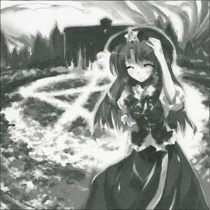

Mysterious Patterns in Flower Field
New Kind of Crop Circle?On the ○○○th of ○○○, a strange pattern suddenly appeared in the gardens of the Scarlet Devil Manor.
The pattern was in the shape of a five-pointed star, and people began to whisper about crop circles at the Scarlet Devil Manor.
However, the pattern wasn't formed by flowers being pressed to the ground, but rather, the flowers in the pattern had all turned white, as if a group of white flowers had sprung up among the crimson ones.
People are saying this state of affairs at the Scarlet Devil Manor is an example of the much-rumored crop circle.
Crop circles are a deeply mysterious phenomenon where geometric patterns appear in fields.
However, nobody had ever seen one before, so it had remained a mysterious rumor.
The mistress of the Scarlet Devil Mansion, Remilia Scarlet (vampire), had this to say about the phenomenon:
Crop circles are a good omen, aren't they? A white star in a flower field ... It's surely a symbol of victory, no?
It's unclear whose victory it's meant to represent, but it certainly is nice to look at the brilliant pattern in the flowers.
Crop circles certainly do seem to be good omens of sorts.
The individual in charge of the garden in question is the Scarlet Devil Manor's door guard, Hong Meiling (youkai).
I asked her about this incident as well.
Is it really a crop circle? It doesn't really look like one to me ... I was so scared because I thought she'd get mad again. I'm in charge of maintaining the garden, after all. Even if she told me to change it back, I don't have the slightest idea how to do that, or how it happened, so I'm so glad the mistress likes it.
Even now, the Scarlet Devil Manor's garden has a white star where the flowers have changed colors.
The star-shaped crop circle makes the brilliant crimson flower garden even more amazing to look at.
Nobody knows who did this or why, but people still talk of it being the work of aliens.
Meiling
Well, the mistress got tired of it, so she told me to change it back.
Aya
So the star pattern is still there?
Meiling
I don't even know how to make flowers change colors, so I can't really make it change back just because she says so.
Aya
Why don't you try telling her that?
Meiling
That won't do me any good~
Aya
Why don't you try tricking her somehow until they wilt?
Meiling
There's no way I could do that~
Aya
Well, she'll get angry if you don't do anything, right? You should just tell her it's impossible.
Meiling
How could I tell her that? She knew I couldn't do anything about it from the start. But the mistress likes teasing people, so ... *sob sob*
Aya
In any case, I wonder what that star pattern is.
Meiling
Yes, that is the question, isn't it? But nobody will touch it. Everyone just says how beautiful or interesting it is. I'm the only one worried about it, since I'm in charge of maintaining the gardens.
Aya
Everyone calls it a crop circle ...
Meiling
But it's not even circle shaped. It's kind of suspicious how it just appeared suddenly out of nowhere. It happened in the time it took me to make my rounds around the perimeter of the mansion. It was only about thirty minutes.
Aya
Was it really that short?
Meiling
Probably.
Aya
You didn't fall asleep on the way, did you?
Meiling
I-I wouldn't slack off like that!
Aya
Hm, that's not normal. Still, it's hard to believe it's the work of aliens, like some people say.
Meiling
Oh? If you're not as smart as aliens, I bet you'd think they couldn't do it.
Aya
But what could this garden mean to the aliens? It's just a star.
Meiling
Mean? Anyway, I wonder what crop circles are. I've never even heard of them before, so I don't know much about them-
Patchouli
They say that crop circles are used in the outside world to breathe new life into an old village. Supposedly somebody thought of it as a way to bring tourists to old towns in the middle of nowhere with nothing but farming fields.
Meiling
Oh, Miss Patchouli, it's so unusual to see you out here.
Patchouli
You still haven't turned it back to normal? Remi will get mad, you know. In any case, nobody really knows what crop circles are. They say they might also be formed by something rising up to the surface from underground.
Aya
You seem to know a lot about crop circles.
Patchouli
However, this star-shaped crop circle is an experiment of mine. I devised it from the rumors.
Meiling
Huuuuuh!? What did you say!?
Profile:
Hong Meiling
She is the gate keeper of the Scarlet Mansion, and is able of controlling Chi, martial arts.
Appearances:
Embodiment of Scarlet Devil, Immaterial and Missing Power